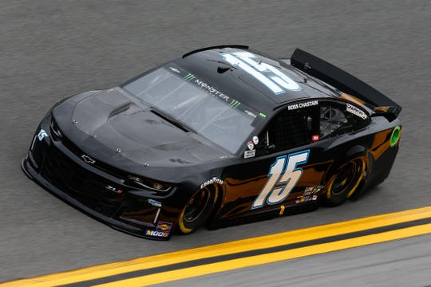

"The busiest driver in NASCAR" Ross Chastain will be back with Jay Robinson's Premium Motorsports next year. The 26 year old Floridian watermelon farmer will run full-time in the Cup series to supplement his Xfinity Series duties for Kaulig Racing. He could possibly return to Al Niece's truck team on a part time basis, but a full-time slate seems unlikely at this point, barring increased support from CarShield and Chastain's other sponsors.